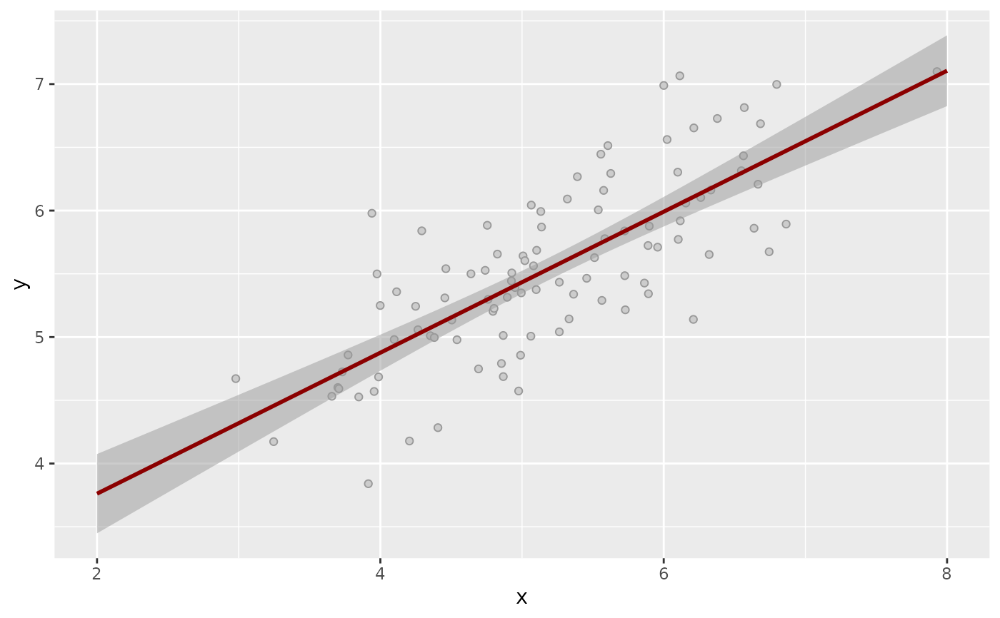
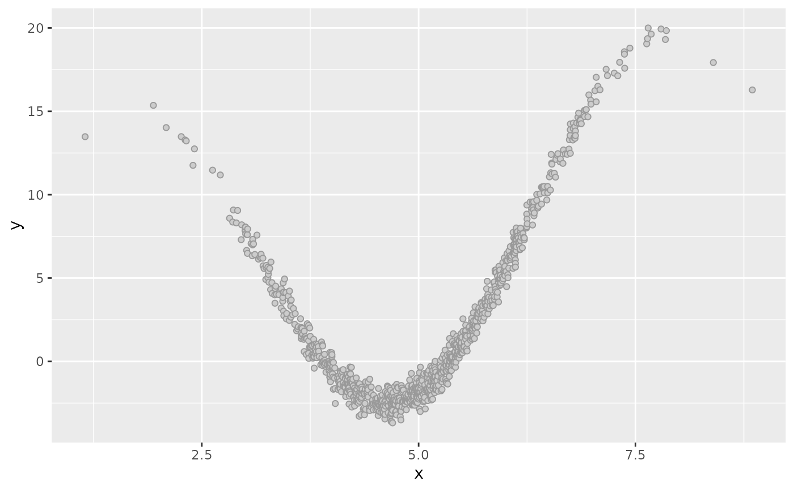
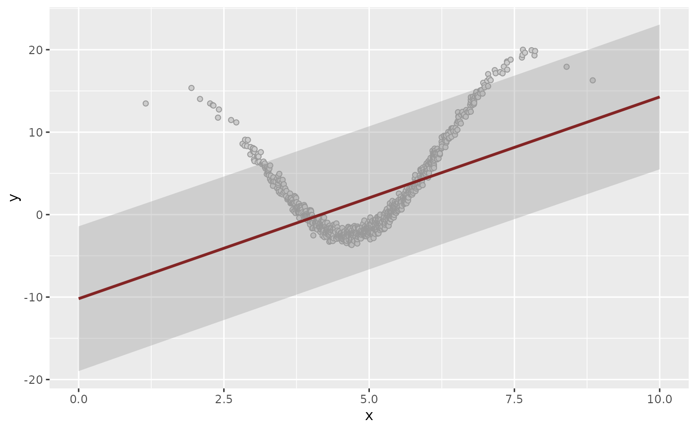
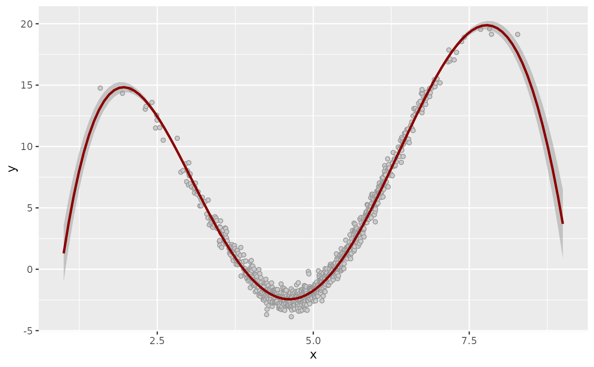

Fit Linear model to klassets_xy object
Arguments
- df
A object from
sim_response_xy.- order
Order of predictive variable x.
- stepwise
A logical value to indicate to perform stepwise.
- verbose
A logical value to indicate to show the trace of the stepwise procedure.
Examples
df <- sim_xy()
df
#> # A tibble: 500 × 2
#> x y
#> <dbl> <dbl>
#> 1 1.97 3.23
#> 2 2.08 3.82
#> 3 2.31 4.10
#> 4 2.49 4.42
#> 5 2.50 4.65
#> 6 2.60 4.04
#> 7 2.77 4.93
#> 8 2.88 4.25
#> 9 2.96 3.73
#> 10 2.98 4.85
#> # … with 490 more rows
dflm <- fit_linear_model(df)
dflm
#> # A tibble: 500 × 3
#> x y prediction
#> <dbl> <dbl> <dbl>
#> 1 1.97 3.23 4.02
#> 2 2.08 3.82 4.07
#> 3 2.31 4.10 4.18
#> 4 2.49 4.42 4.27
#> 5 2.50 4.65 4.28
#> 6 2.60 4.04 4.32
#> 7 2.77 4.93 4.41
#> 8 2.88 4.25 4.46
#> 9 2.96 3.73 4.51
#> 10 2.98 4.85 4.52
#> # … with 490 more rows
plot(dflm)

df <- sim_xy(1000)
df <- dplyr::mutate(df, y = y + 10 * sin(x) + sqrt(abs(x)))
plot(df)

plot(fit_linear_model(df))

plot(fit_linear_model(df, order = 5, stepwise = TRUE, verbose = TRUE))
#> Start: AIC=-1125.07
#> y ~ x + x_2 + x_3 + x_4 + x_5
#>
#> Df Sum of Sq RSS AIC
#> <none> 320.76 -1125.07
#> - x_5 1 53.25 374.01 -973.48
#> - x_4 1 131.11 451.87 -784.36
#> - x_3 1 236.05 556.81 -575.53
#> - x 1 288.15 608.91 -486.09
#> - x_2 1 314.99 635.75 -442.96
